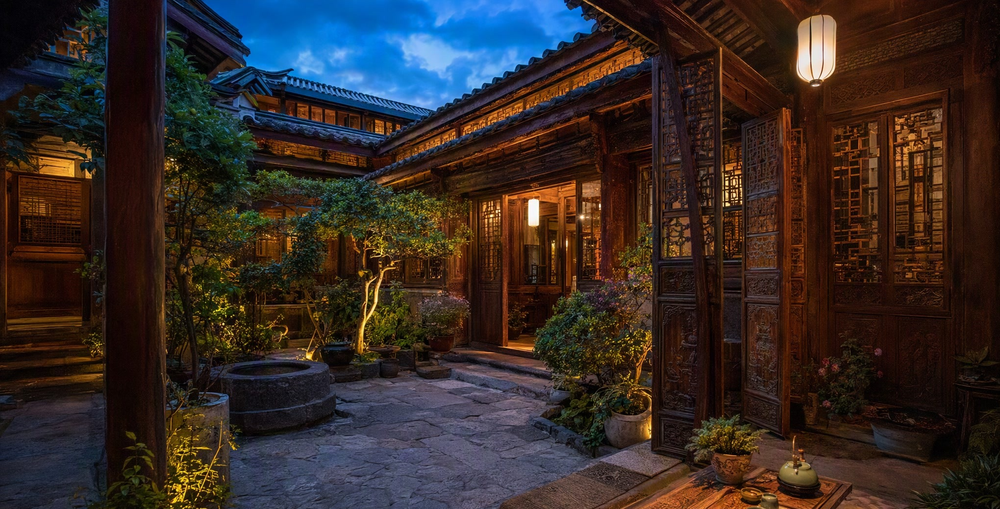
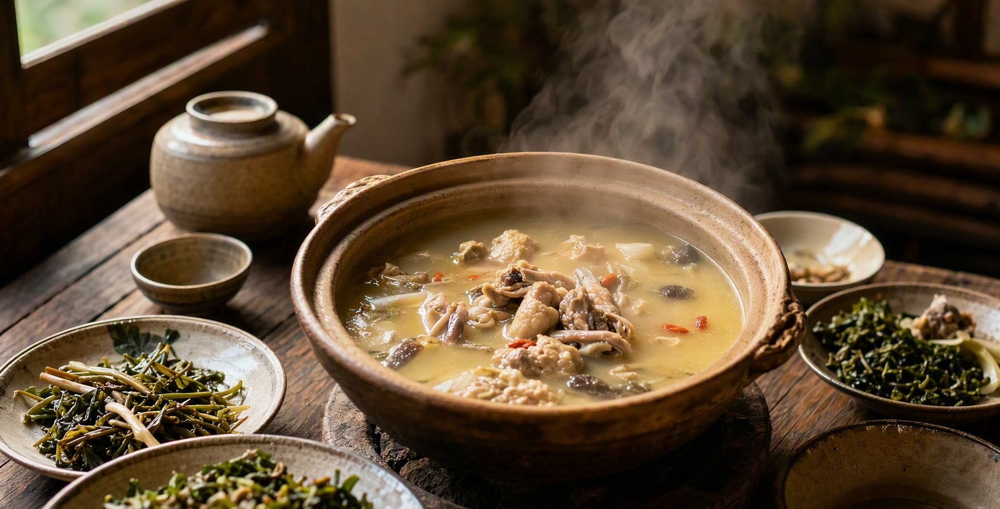

心法
01
Principle · 心法
这趟旅行真正想要的是什么
这不是一条「六天尽量塞满景点」的路线，而是一趟以舒服、浪漫和有余裕为完成标准的双人慢度假。
慢下来不是减少旅行内容，而是让每一段体验真正留下来。下面六条心法，是整趟行程所有取舍的依据——任何纠结时，回到这里。
「酒店也是目的地：院子喝茶、早餐、午休、雨声和庭院拍照，都是这趟旅行的一部分，而不是『没出去玩』。」
六日
02
Overview · 总览
六天行程总览
每天只有一个主场景。点开卡片查看当天关键词、核心取舍与备用方案。
院落
03
Home Base · 主场
把百年纳西院落当作旅行主场

连续 5 晚入住丽江古城花间府·植梦。它是花间堂品牌早期院落之一，由当地杏林世家「绍恒堂」和氏的百年纳西老宅改造而成，保留了纳西大户民居常见的「四合五天井」格局。
「四合五天井」并不只是一个建筑名词：主院、侧院、廊道和大小天井共同组织采光、通风与家庭生活。木门窗、雕饰、瓦檐、石阶和花木形成层层递进的空间，从热闹街巷走进院门后，声音和节奏会自然慢下来。
这种「外面是古城，里面是家」的反差，正适合作为六天行程的固定主场。
酒店在本次行程中的五个功能
建议提前向酒店确认
酒店早餐、下午茶、迷你吧、汉服体验、伴手礼等具体服务来自现有资料，可能随房型、日期和运营调整，均以酒店管家最终确认为准。
04
Decisions · 决定
出发前的两个关键决定
把最难的判断提前写成规则，现场就不再消耗情绪。
主计划：8 月 9 日（周日）前往；8 月 10 日作为天气和身体状态备用日。
8 月 8 日傍晚进行最终判断：
| 当时情况 | 决定 |
|---|---|
| 8/9 白天降雨较少，无雷暴、道路或铁路预警，两人身体正常 | 按主计划 8/9 前往 |
| 8/9 持续中到大雨，8/10 明显更好 | 改到 8/10 |
| 两天均有阵雨，但无预警且身体正常 | 选 8/9，保留室内妆造、藏餐和古城短逛 |
| 有明显头痛、恶心、胸闷、睡眠很差或交通预警 | 缩短或取消，不硬撑 |
购票原则：不要为了等天气而拖到前一天才抢票。先以 8 月 9 日为默认日期，在开售时锁定合适车次；需要调整时，再按 12306 当时的改签、退票规则处理。
以下任一情况出现，当天立即改为酒店休息、古城咖啡或短距离吃饭：
这不是浪费行程。对慢度假来说，舒服地放弃一个可选点，比疲惫地完成它更重要。
行旅
05
Itinerary · 行程
每日详细时间轴
点击时间轴上的任意一段，展开当时的详细安排、内容、交通与备注。
文脉
06
Culture · 文化
三地文化预习
点击卡片翻转，查看每一地的文化线索与观察关键词。
光影
07
Atmosphere · 摄影
摄影氛围指南
每一处机位做成一张卡片：正面是画面关键词，翻过来是拍摄建议。
食单
08
Food · 美食
美食清单与点餐攻略
帮助现场快速决定「吃什么」，而不是要求逐项打卡。所有店铺名称仅作搜索候选，出发前查看地图平台最近 1—3 个月评价。

备择
09
Plan B · 备选
备选景点与替换攻略
所有备选点遵循「替换，不叠加」原则：只有原景点因天气、人流、身体状态或临时关闭无法执行时，才从清单中选一个替代。
快速决策表
最终判断标准始终是：这个备选能不能让当天更舒服，
而不是能不能让景点数量变得更多。
而不是能不能让景点数量变得更多。
实务
10
Practical · 实务
交通 · 穿搭 · 高原安全
🚄大交通
| 方向 | 参考方案 | 使用原则 |
|---|---|---|
| 成都南→丽江 | D239 参考 08:33—17:46 | 只在 12306 购票；无票优先候补 |
| 丽江→成都南 | D240 参考 11:03—20:18 | 不把退房和采购压在一起 |
| 丽江↔香格里拉 | 动车当日往返 参考 C985 09:41→11:22 | 去程不必过早，回程留足休息和进站时间 |
现有第一份资料曾建议提前服用红景天，但其效果、适用人群和禁忌并未在材料中得到充分医学支持，本整合版不把它列为必须措施。个人用药以医生或药师建议为准。
预约与核验清单（最晚处理时间）
11
Budget · 预算
双人预算参考
不含已支付酒店。金额为规划参考区间，动车与门票以当日实际为准。
不做跟拍、不去玉湖村且餐饮控制得当，通常可落在约 5,000—6,500 元；升级旅拍、包车、观景餐厅或购买较多伴手礼时，建议再预留 500—1,500 元。
行囊
12
Checklist · 清单
出发清单
勾选会自动保存在这部手机上，旅途中随时回来打勾。